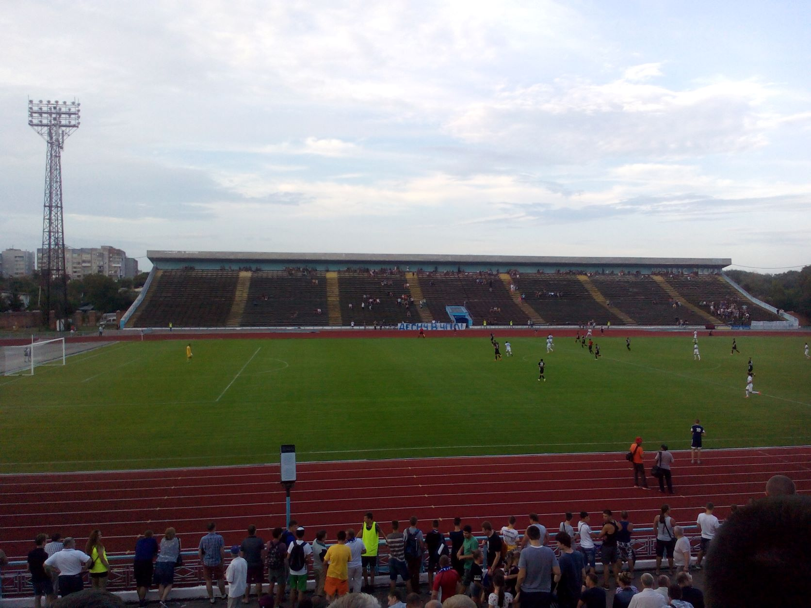
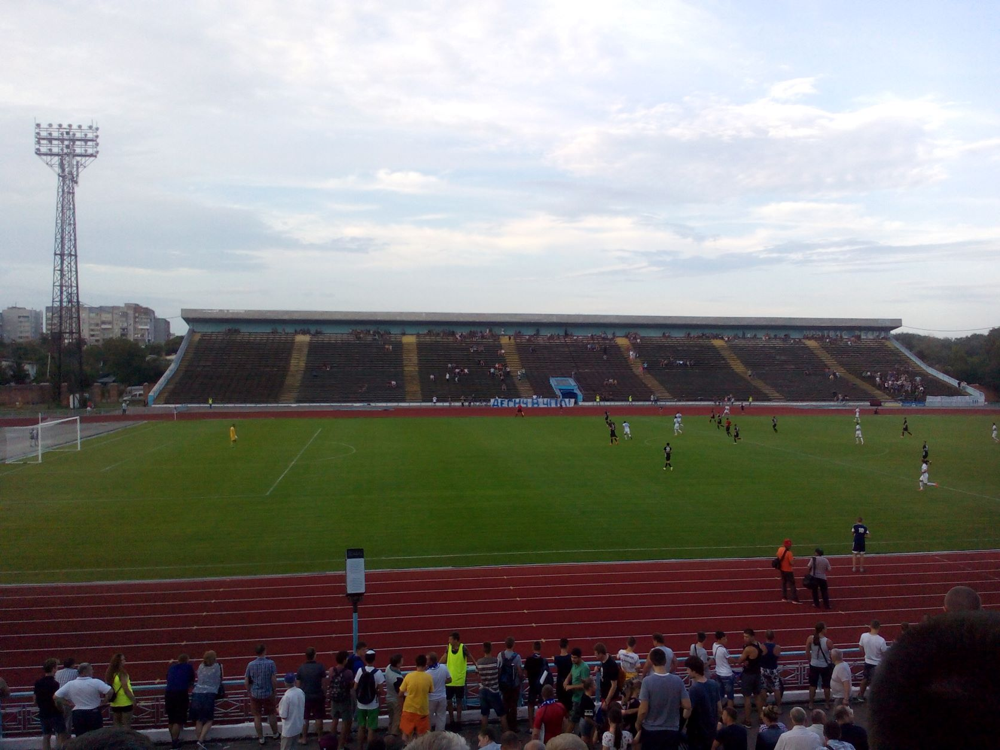
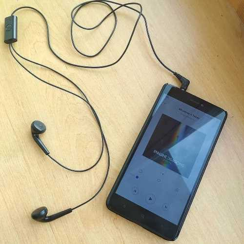
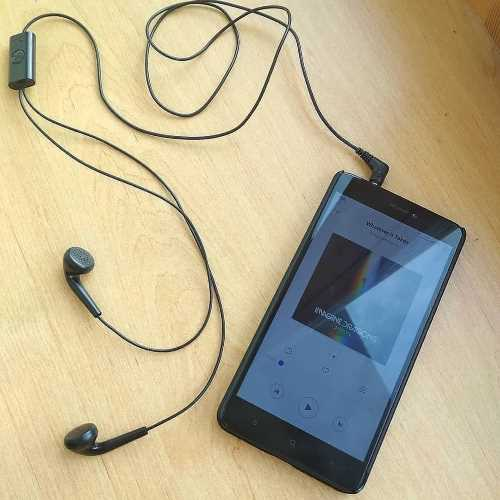
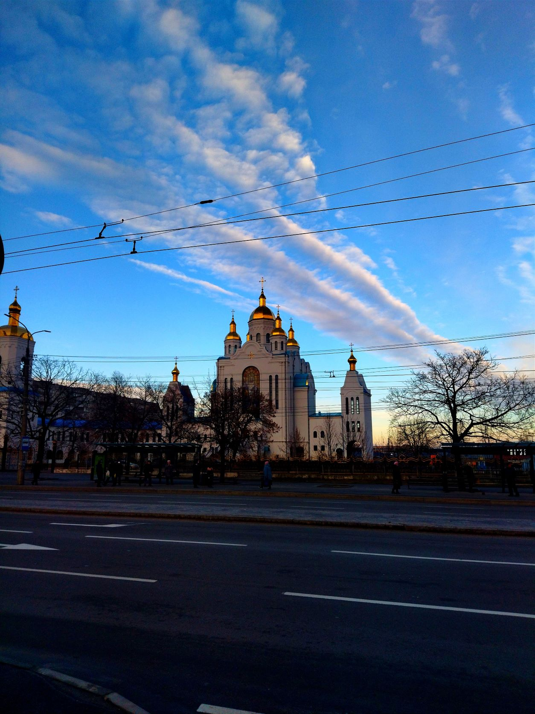
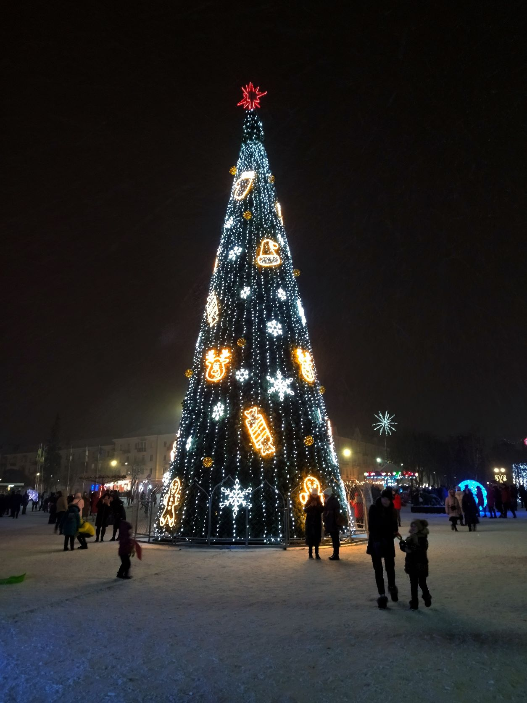

Мої захоплення
Загалом, я цікавлюся такими напрямками та видами діяльності:
Загалом, я цікавлюся такими напрямками та видами діяльності:
- ІТ
- Футбол
- Прослуховування музики
- Відеоігри
- Фотографія
ІТ
Моє знайомство з інформаційними технологіями почалося ще в далекому дитинстві. Так, після того, як мій батько придбав свій перший слабенький комп'ютер для роботи, я дивився на ньому різні відео та грав у свої перші відеоігри. Згодом я починав розуміти, що Total Commander - це сховище відео, музики та ігор, які можна завантажити з Opera. Тоді я, фактично, опанував основи користування ПК.
Десь у 2013-му році в мене з'явився новий за технологією використання телефон - смартфон Samsung Galaxy Young. Тоді для мене відкрився захоплюючий віртуальний світ. Я навчився шукати потрібну інформацію в браузері, переглядати відео на YouTube, встановлювати програми як з Google Play, так і через apk-файли. Після цього почав цікавитися роботою комп'ютерів та смартфонів, їх операційних систем. Я дізнався, для чого існують root-права, як отримати їх на пристрої, як апаратним чином можна скинути налаштування на смартфон/планшеті й т.п.
Через кілька років мені придбали ноутбук. Його технічні характеристики були слабкими. Тож, я почав цікавитися комп'ютерними компонентами, зокрема процесорами та відеокартами. Після того мене зацікавило те, яким чином працюють програми. Так я і прийшов до програмування. Зважаючи на зацікавленість у інформаційних технологіях, вирішив вступити на спеціальність "Комп'ютерна інженерія".
Моє знайомство з інформаційними технологіями почалося ще в далекому дитинстві. Так, після того, як мій батько придбав свій перший слабенький комп'ютер для роботи, я дивився на ньому різні відео та грав у свої перші відеоігри. Згодом я починав розуміти, що Total Commander - це сховище відео, музики та ігор, які можна завантажити з Opera. Тоді я, фактично, опанував основи користування ПК.
Десь у 2013-му році в мене з'явився новий за технологією використання телефон - смартфон Samsung Galaxy Young. Тоді для мене відкрився захоплюючий віртуальний світ. Я навчився шукати потрібну інформацію в браузері, переглядати відео на YouTube, встановлювати програми як з Google Play, так і через apk-файли. Після цього почав цікавитися роботою комп'ютерів та смартфонів, їх операційних систем. Я дізнався, для чого існують root-права, як отримати їх на пристрої, як апаратним чином можна скинути налаштування на смартфон/планшеті й т.п.
Через кілька років мені придбали ноутбук. Його технічні характеристики були слабкими. Тож, я почав цікавитися комп'ютерними компонентами, зокрема процесорами та відеокартами. Після того мене зацікавило те, яким чином працюють програми. Так я і прийшов до програмування. Зважаючи на зацікавленість у інформаційних технологіях, вирішив вступити на спеціальність "Комп'ютерна інженерія".
Футбол
 Футболом я теж цікавлюся з дитинства. Чудово запам'ятав свій перший переглянуий матч, у якому зустрілися київське "Динамо" і московський "Спартак". Це було протистояння за вихід до групового етапу Ліги Чемпіонів сезону 2008/09. Тоді український клуб розгромив суперника з рахунком 4:1. Спершу підтримував українські команди, такі як "Шахтар", "Динамо Київ", "Десна". А потім зацікавився збірною України та англійським клубом "Манчестер Сіті".
Часто гуляли у вуличний футбол з батьком, з другом, а також із простими вуичними хлопцями. Ще пам'ятаю, як збирав наклейки до Євро 2012 (так і не вдвалося до кінця зібрати, на жаль). Зараз же я в основному граю в комп'ютерний футбол, який представляє широко відома серія ігор FIFA.
Хоч і нинішня зацікавленість до цього виду спорту трохи зменшилася, я намагаюся не пропускати матчі за участі збіної України. Як же гарно виступила наша збірна в минулому році на Євро 2020! Дійшли аж до 1/4 фіналу! Останнє подібне досягнення було аж 16 років тому, під час Чемпіонату світу 2006.
 Футболом я теж цікавлюся з дитинства. Чудово запам'ятав свій перший переглянуий матч, у якому зустрілися київське "Динамо" і московський "Спартак". Це було протистояння за вихід до групового етапу Ліги Чемпіонів сезону 2008/09. Тоді український клуб розгромив суперника з рахунком 4:1. Спершу підтримував українські команди, такі як "Шахтар", "Динамо Київ", "Десна". А потім зацікавився збірною України та англійським клубом "Манчестер Сіті".
Часто гуляли у вуличний футбол з батьком, з другом, а також із простими вуичними хлопцями. Ще пам'ятаю, як збирав наклейки до Євро 2012 (так і не вдвалося до кінця зібрати, на жаль). Зараз же я в основному граю в комп'ютерний футбол, який представляє широко відома серія ігор FIFA.
Хоч і нинішня зацікавленість до цього виду спорту трохи зменшилася, я намагаюся не пропускати матчі за участі збіної України. Як же гарно виступила наша збірна в минулому році на Євро 2020! Дійшли аж до 1/4 фіналу! Останнє подібне досягнення було аж 16 років тому, під час Чемпіонату світу 2006.
Прослуховування музики
 Наступним моїм хобі є прослуховування музики. Я вважаю, що слухання пісень - це чудовий спосіб відволіктися від роботи, або від складнощів у житті. Крім того, більшість пісен у мене пов'язані з певними подіями.
За жанрами я слухаю різну музику. Це може бути як і спокійна класична (наприклад, композиції Ludovico Einaudi), так і важкий рок (наприклад, Rammstein). У мене є своя улюблена пісня - Wind of Change від Scorpions. Узагалі, я вважаю цю пісню однією з кращих у другій половині ХХ століття.
Напишу також виконавців, чиї пісні я полюбляю слухати:
- Scorpions;
- Queen;
- Rammstein;
- Imagine Dragons;
- Ludovico Einaudi;
- Kasabian;
- Linkin Park.
Тож, слухайте ту музику, яка Вам подобається. У кожної людини свої вподобання: комусь подобається класика, комусь - важка музика, а комусь - і те, і інше (як мені).
 Наступним моїм хобі є прослуховування музики. Я вважаю, що слухання пісень - це чудовий спосіб відволіктися від роботи, або від складнощів у житті. Крім того, більшість пісен у мене пов'язані з певними подіями.
За жанрами я слухаю різну музику. Це може бути як і спокійна класична (наприклад, композиції Ludovico Einaudi), так і важкий рок (наприклад, Rammstein). У мене є своя улюблена пісня - Wind of Change від Scorpions. Узагалі, я вважаю цю пісню однією з кращих у другій половині ХХ століття.
Напишу також виконавців, чиї пісні я полюбляю слухати:
- Scorpions;
- Queen;
- Rammstein;
- Imagine Dragons;
- Ludovico Einaudi;
- Kasabian;
- Linkin Park.
Тож, слухайте ту музику, яка Вам подобається. У кожної людини свої вподобання: комусь подобається класика, комусь - важка музика, а комусь - і те, і інше (як мені).
Відеоігри
Як я уже писав, відеоіграми цікавлюся з дитинства. Щодо жанрів ігор, які цікавлять, можу виділити спортивні, перегони та симулятори. А перелік моїх улюблених серій ігор наступний:
- FIFA;
- Dirt Rally;
- F1.
Раніше ще любив гратися в NFS, але з часом інтерес до таких шалених перегонів зник.
Як я уже писав, відеоіграми цікавлюся з дитинства. Щодо жанрів ігор, які цікавлять, можу виділити спортивні, перегони та симулятори. А перелік моїх улюблених серій ігор наступний:
- FIFA;
- Dirt Rally;
- F1.
Раніше ще любив гратися в NFS, але з часом інтерес до таких шалених перегонів зник.
Фотографія
Це улюблене заняття з'явилося у мене нещодавно. Я зрозмів, що мені приносить задоволення фотографування природи, архітектурних споруд та визначних місць. Цікаво також порівнювати світлини одного і того ж місця, зроблені в різні пори року, а також покращення фотографій шляхом зміни параметрів фото. Для останнього я користуюся як вбудованим в смартфон фоторедактором, так і професійним програмним забезпеченням, як-от Adobe Photoshop.
Це улюблене заняття з'явилося у мене нещодавно. Я зрозмів, що мені приносить задоволення фотографування природи, архітектурних споруд та визначних місць. Цікаво також порівнювати світлини одного і того ж місця, зроблені в різні пори року, а також покращення фотографій шляхом зміни параметрів фото. Для останнього я користуюся як вбудованим в смартфон фоторедактором, так і професійним програмним забезпеченням, як-от Adobe Photoshop.

Церква у Чернігові (2022)

Новий рік (2022)